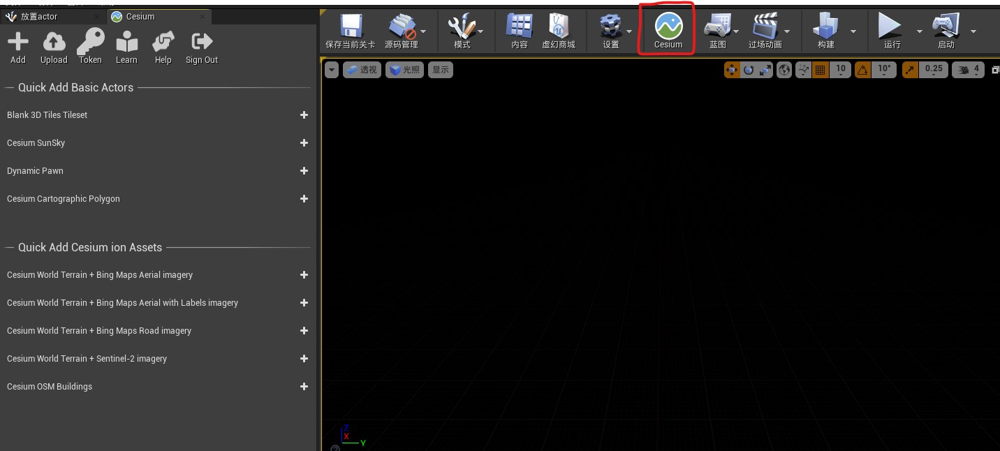
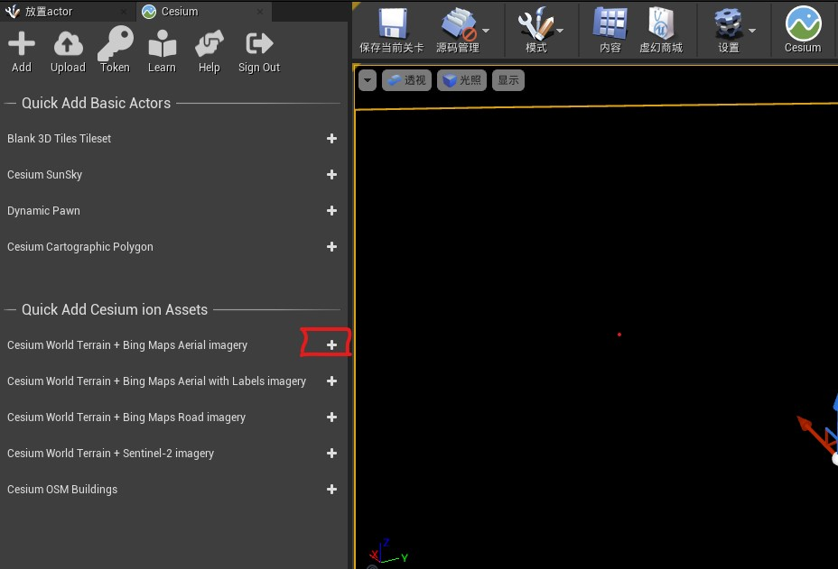
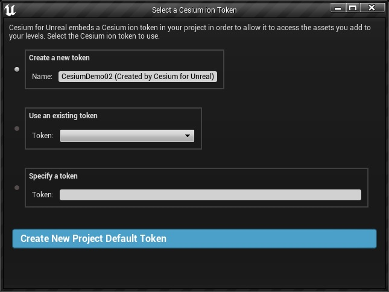
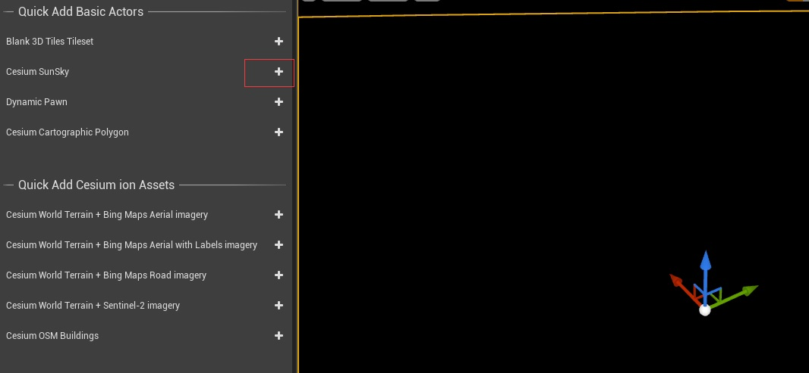
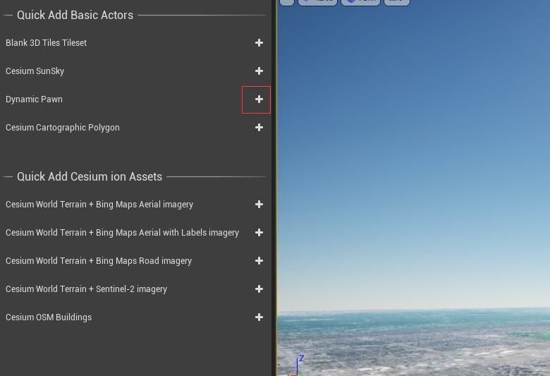

- Ureal Engin 版本 4.27
第一步：安装 Cesium 插件
启动 Epic Games Launcher，搜索 Cesium for Unreal

第二步：新建项目关卡
1. 项目类型——>游戏，模板——>空白，选择不带初学者内容包
2. 激活 Cesium for Unreal 插件

3. 删除【世界大纲视图】中的所有内容，这样就有了一个空的关卡

保存当前关卡
将你上面保存的关卡设置为编辑器开始地图和游戏默认地图

第三步：Connect to Cesium ion

第四步：在场景中添加球

开始会有创建 token 的对话框，完成后，在世界大纲视图中会添加下面几个 Actor 对象


第五步：使用 CesiumSunSky 添加照明
启用【项目设置】【扩展自动曝光设置中的默认亮度范围】


第六步：添加 DynamicPawn

- 确保 DynamicPawn 自动控制玩家属性为玩家0
- 设置相对位置变换为 (0, 0, 0)


第七步：通过 CesiumGeoreference 修改场景的初始位置

第八步：通过 CesiumSunSky 设置光照